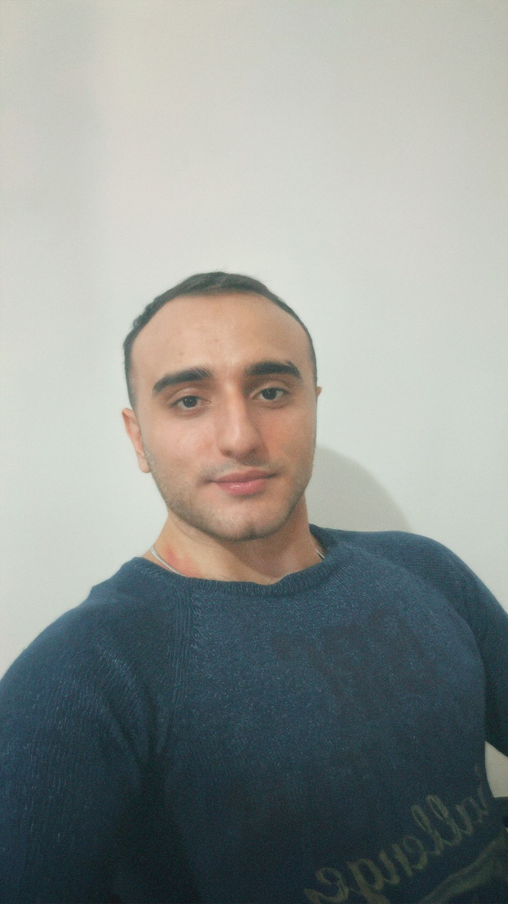

My Resume
Behram CENGİZOĞLU

Summary
-
I am a graduate of Iskenderun Technical University, Computer
Engineering. I am experienced in coding. In my relationship with the
environment, I see myself as an entrepreneur, honest, determined and
prone to teamwork. I am a hardworking and devoted person.
Education
- Mev Özel Toros Anadolu Lisesi ( 2015 - 2018 )
-
İskenderun Teknik Üniversitesi Bilgisayar Mühendisliği ( 2018 - 2021 )
Work experience
-
Mifa Bilgi Sistemleri
- Software Developer ( 2022 - )
- I make improvements to websites according to the demands and needs of companies.
Skills
- html/css
- Javascript
- Node.js
- PostgreSQL
- React.js
Certifications
- Zorlu - Geleceğe bi'adım certifications
Hobbies
- Volleyball
- Badminton
- Martial Arts
- Bowling
- Ping Pong
Other
Contact